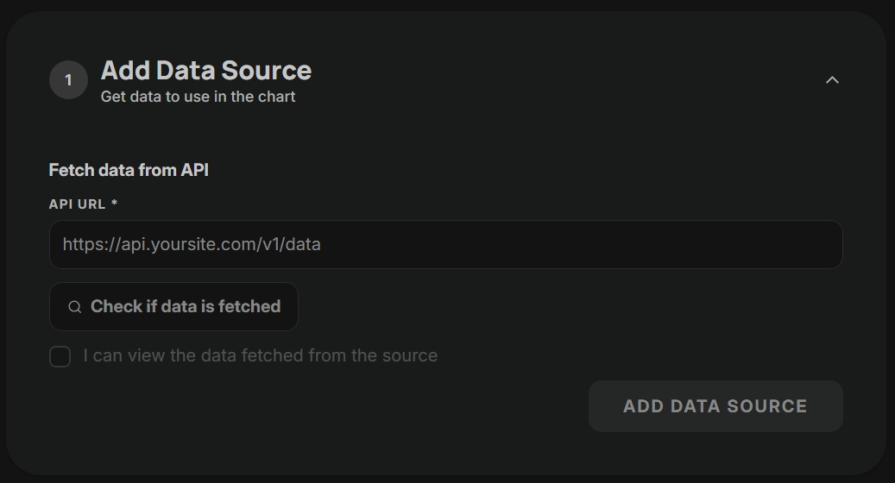
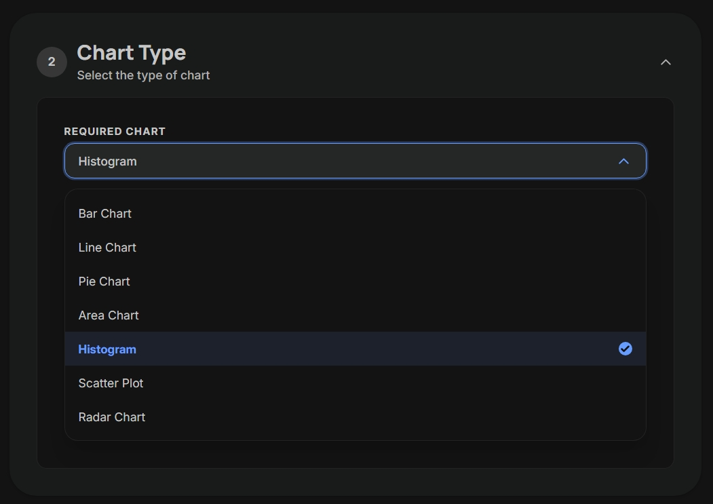
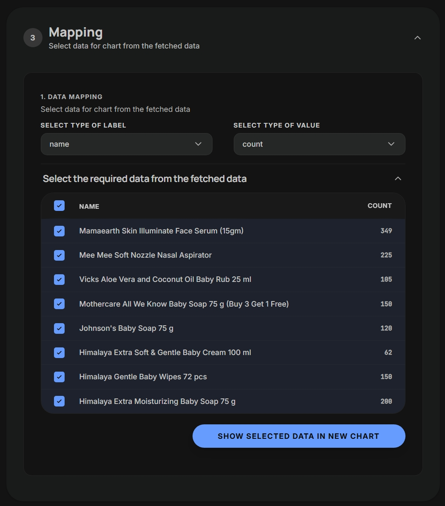
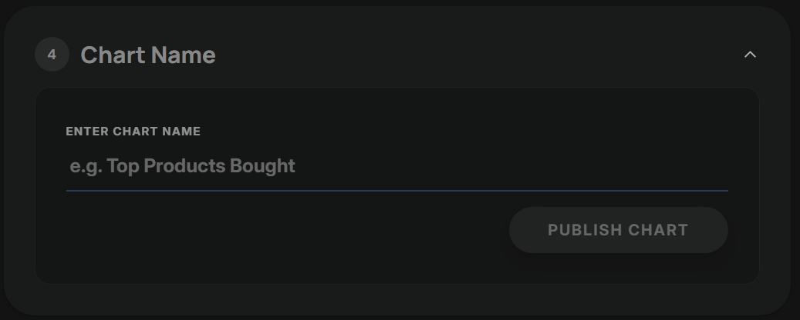
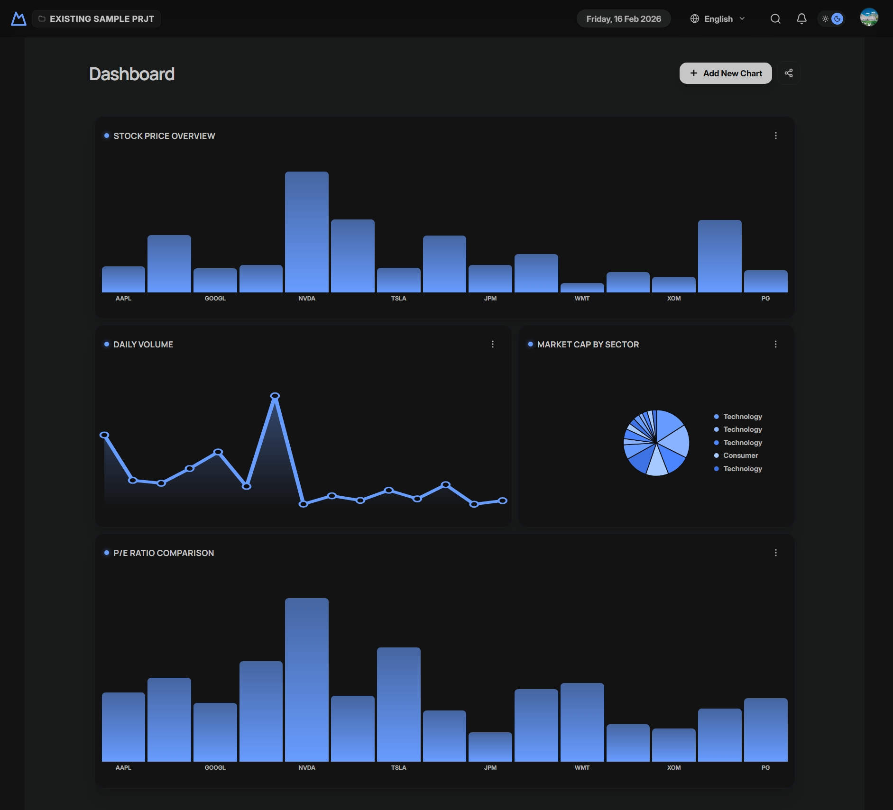

No code dashboard builder
for designers
Such dashboards are priceless for owners running business online. Earn your own revenue with this valuable side hustle

From API to client-ready dashboards
— without code
Go from raw data to a usable dashboard your clients can understand and act on.





Your customers can get all critical informations in one place.
Desingers can consult with their clients to build
customised visualzations as per their KPIs.